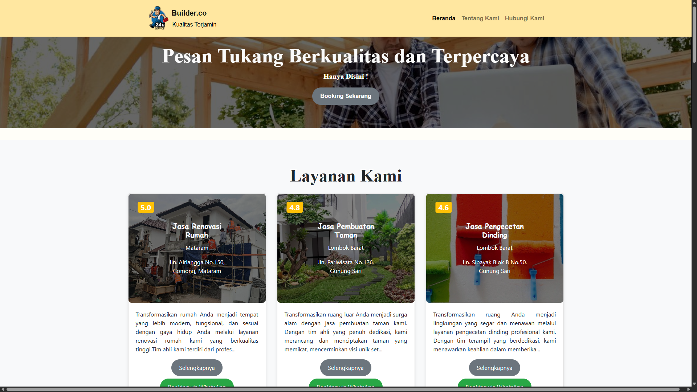
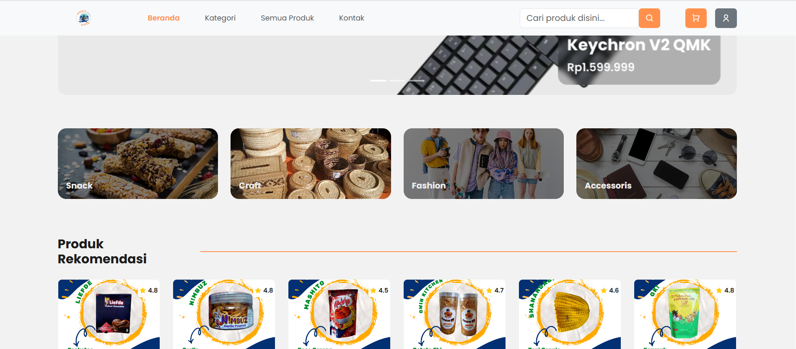
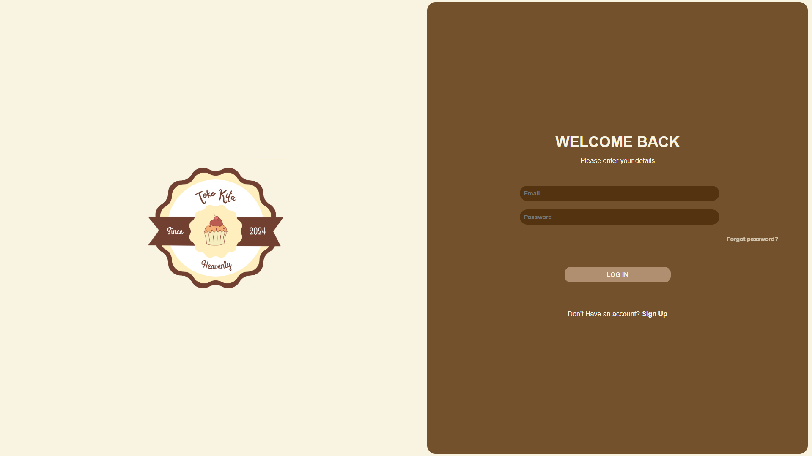
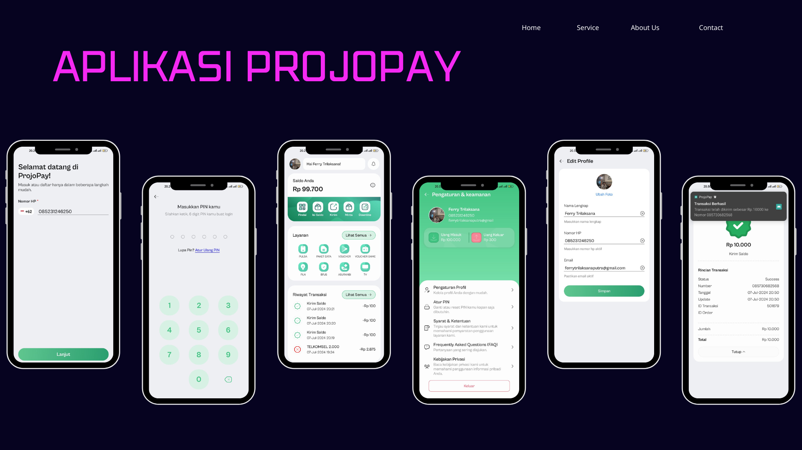
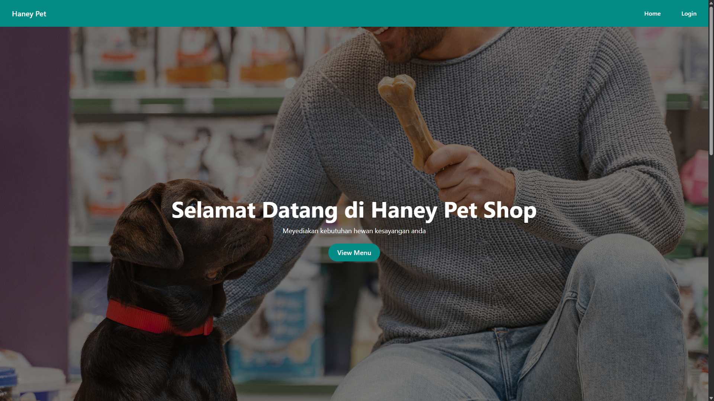

I'm Ferry Trilaksana Putra
and I'm a
About me

I am a fresh graduate from UPN Veteran East Java with a strong interest in web and mobile application development. I have a solid foundation in programming, with experience learning C/C++, PHP, JavaScript, and Python, as well as working with frameworks such as Laravel, Node.js, and Native.js, and managing databases using MySQL. I also completed a 6 month certification program through MBKM at Dicoding Indonesia as a Full Stack Web Developer, and gained 6 months of internship experience at CV. Projo Teknologi Nusantara as a Full Stack Mobile Developer. I am passionate about continuously improving my skills, contributing to the technology industry, and creating impactful digital solutions for society.
Download My CVMy services
Front-End Developer
Back-End Developer
Mobile App
My skills
My Skill.
I am very interested in learning programming languages. Programming is one of my passions. Currently, I am familiar with C/C++, HTML/CSS, PHP, Javascript and using NextJS Tailwind Framework, as well as MongoDB as a database. I also have experience deploying apps using Docker Compose and Kubernetes. Testing using Jenkins and monitoring App using prometheus.
My GithubRecent Project

Bulider.co
Builder.co is a website operating in the construction services sector, based in Nusa Tenggara Barat, Indonesia. The platform was developed using JavaScript as its core programming language, with a customized front-end built using Tailwind CSS and Bootstrap, while the back-end is powered by Node.js. The main purpose of Builder.co is to provide the local community, especially in Mataram, NTB, with access to references and services related to builders available in the region. By offering a centralized platform, the website helps connect residents with reliable construction professionals, making it easier to find skilled workers and trusted servic Beyond its technical foundation, Builder.co also aims to contribute to the local economy by promoting local craftsmanship and supporting small to medium-sized businesses in the construction industry. It serves not only as a directory of services but also as a digital solution that enhances accessibility, transparency, and efficiency in finding builder-related resources. In the long run, Builder.co envisions becoming a comprehensive hub for construction services in NTB, fostering collaboration between communities and professionals, and encouraging the adoption of digital platforms in traditional industries.
Tech Stack : HTML, CSS, PHP, Bootstrap, JavaScript.

Nusantara Resto
Nusantara Resto is a web-based application that focuses on providing recommendations and rating information for restaurants across Indonesia. The platform was developed using JavaScript as the primary programming language, with a custom front-end design built using Tailwind CSS and Bootstrap. For the back-end, the system is supported by the team at Dicoding Indonesia, utilizing JSON scripts on Node.js with the Express.js framework. The goal of Nusantara Resto is to make it easier for users to discover restaurants, compare ratings, and access detailed information about dining options throughout the country. By combining modern web technologies with a user-friendly interface, the application enhances the dining experience by helping people make informed choices. Beyond its technical aspects, Nusantara Resto also aims to promote culinary diversity in Indonesia by showcasing restaurants from different regions, encouraging exploration of local cuisines, and supporting the food and beverage industry through digital innovation. In the future, the platform envisions expanding its features to include personalized recommendations, user reviews, and integration with reservation or delivery services, making it a comprehensive hub for food enthusiasts nationwide.
Tech Stack : HTML, CSS, PHP, Bootstrap, JavaScript, Express.js

Toko Kita
Toko Kita is a web-based application designed to support the sale of food and beverages within a restaurant environment. The platform provides essential features such as customer and employee login systems, menu selection, and an integrated payment system. The website was developed using the Laravel framework with a custom front-end built using Tailwind CSS, while the primary programming language used is PHP. The purpose of Toko Kita is to streamline restaurant operations by offering a digital solution that enhances efficiency and improves customer experience. With its user-friendly interface and secure system, the application allows restaurants to manage orders, staff access, and transactions more effectively
Tech Stack : HTML, CSS, PHP, MySql, Laravel

Mobile Application PROJO PAY
Projopay is a digital application that offers a comprehensive set of PPOB (Payment Point Online Bank) features combined with an attractive and user-friendly interface. One of its standout functionalities is the transaction history feature, which not only allows users to track each transaction in detail but also helps them manage their finances more effectively. Users can easily review the date, amount, and recipient or sender details, making it useful for personal record-keeping as well as for evaluating spending and income patterns over a specific period. This feature enhances transparency and builds user trust by ensuring security and accountability in digital payment activities. In addition to its financial management capabilities, Projopay is technically developed with a front-end built using React Native and a back-end powered by Laravel, ensuring both flexibility and scalability in its performance. Looking ahead, Projopay aims to evolve into a more holistic financial platform by integrating advanced analytics, personalized insights, and broader payment options, making it not only a reliable tool for transactions but also a valuable companion for digital financial management
Tech Stack : HTML, CSS, PHP, JavaScript, MySql, Bootstrap, React Native, Laravel

Haney Pet Shop
Haney Pet Shop is a web-based application developed using the Laravel framework. The platform was created to make it easier for customers, especially animal lovers, to purchase essential products for their pets. With its intuitive design and accessible interface, Haney Pet Shop provides a convenient way for users to browse, select, and order pet supplies directly online. Beyond its core functionality, the application also aims to enhance the customer experience by offering features such as secure transactions, organized product categories, and responsive design for seamless use across devices. By digitizing the shopping process, Haney Pet Shop not only supports pet owners in fulfilling their needs more efficiently but also helps local businesses expand their reach through modern technology.
Tech Stack : HTML, CSS, PHP, Laravel, Bootstrap